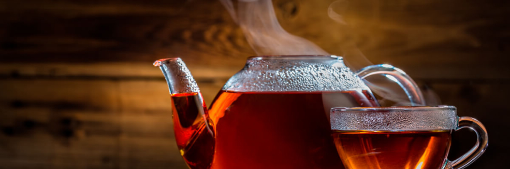

Горячий или холодный?-что полезнее пить
Вы замечали, что каждый человек предпочитает свою температуру чая. Одни пьют его обжигающим, сразу же после заваривания, другие теплым, третьи — максимально охлаждают.
А как это надо делать правильно? Влияет ли степень нагрева на наше здоровье? Почему чай раньше было принято пить из блюдца и дуть на него? Ответы на эти вопросы вы узнаете из нашей статьи.
Содержание
- Можно ли пить чай горячим
- Польза и вред горячего чая
- Как правильно пить горячий чай
- Можно ли пить горячий чай будущим мамам
- Почему в жару лучше пить горячий чай?
- Кому не рекомендуется пить чай в жару
- Какие виды чая наиболее полезны в жару
- Почему горячий чай остывает быстрее, если на него дуют?
- Почему сахар растворяется быстрее в горячем чае, а в холодном-медленно?
- Какая температура необходима для заваривания чая
Можно ли пить чай горячим?
Горячим считается чай с температурой более 60-65⁰С. Это обжигающая жидкость и вопрос о ее влиянии на человеческий организм давно исследуется учеными.
Жители Китая и Тибета считают правильным пить только теплый чай. По их убеждению горячий напиток не способен погасить внутренний пищеварительный «огонь». С ними согласны представители нетрадиционный медицины, утверждающие что холодное способно замедлить пищеварительные процессы.
Большинство европейцев и американцев предпочитают горячий чай. Он бодрит и согревает. В холодную пору можно даже явственно ощутить как тепло разливается по телу. Однако, не все на самом деле хорошо. Проходя путь до желудка кипяток раздражает клетки эпителия и в худшем случае даже способен вызвать образование злокачественных опухолей.
